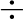
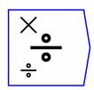

Divide a number by another. The input ports allow multiple wires, which are multiplied together for each port prior to the division being carried out. If an input port is unwired, it is equivalent to setting it to one. Note the small `' and `' signs indicating which port refers to the numerator and which the denominator.
The operator can be placed on the canvas in two ways: